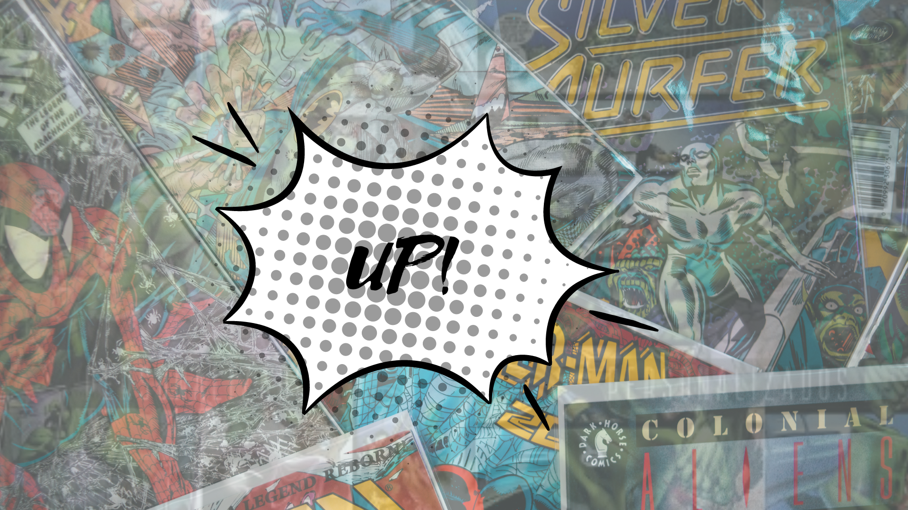

UP!

Confira todas as HQs que a MARVEL publicará
Immoral X-Men (2023) #2
Com roteiro de Kieron Gillen e arte de Andrea DI Vito.
Sinopse:
COLOCANDO O “DIE” NA ERA DOS DIAMANTES! Salve a Pax Krakoa! Ou pereçam! Mas para esta era infernal nasce um herói. Diga olá (novamente) a Rasputin IV… mas o que uma boa quimera pode fazer em um universo de pecado? O primeiro século do plano de Sinistro chegou ao fim… e se é melhor ou pior pode depender do símbolo na testa.

Avengers: War Across Time (2023) #3
Com roteiro de Paul Levitz e arte de Alan Davis.
Sinopse:
O rei dos anões tem Mjolnir, os Lava Men estão prontos para entrar em erupção, e enquanto os Vingadores são tudo o que está entre a Terra e uma desgraça ardente, Kang está escolhendo o momento perfeito para atacar novamente.

Divulgação de HQs da DC Comics
DC Grandes Astros: Superman

Sinopse:
Publicada originalmente entre 2005 a 2008, Grandes Astros: Superman é uma série de 12 edições escrita por Grant Morrison e desenhada por Frank Quitely, que foi amplamente aclamada e um dos quadrinhso mais vendidos da época. A série Grandes Astros tem como objetivo dar liberdade aos quadrinistas de criarem histórias de personagens da DC sem serem restringidos pela continuidade dos quadrinhos.
A série gira em torno de Superman, que está morrendo devido à uma superexposição ao Sol e agora ele encara seus últimos desafios e realiza muitos feitos heróicos finais para a humanidade antes de sua morte iminente. Durante esse processo temos reinterpretações de momentos chaves e grandiosos de sua história, reconhecida por muitos como uma das melhores histórias do Superman já feita.
Batman Volume 1 – Grant Morrison

Sinopse:
Além de confirmar uma sequência do Batman de Matt Reeves com Robert Pattinson, Gunn também citou uma nova versão do Cavaleiro das Trevas inspirado no arco de histórias de Grant Morrinson nos quadrinhos como principal inspiração. Foi nessa fase que Morrison apresentou o filho desconhecido de Bruce Wayne com Talia Al Ghul (e, assim, neto do vilão do Batman, Ra's al Ghul), Damian Wayne, e que acaba assumindo manto de Robin - o que acaba gerando uma relação conturbada com Tim Drake, o Robin da época.
O problema é que o menino foi criado e treinado pelo seu avô como um guerreiro mortal e impiedoso, um pequeno psicopata que odeia o seu pai, que passou a treiná-lo, buscando salvá-lo de suas tendências homicidas e cruéis. Como o próprio Gunn revelou, essa será uma "história de pai e filho muito estranha".